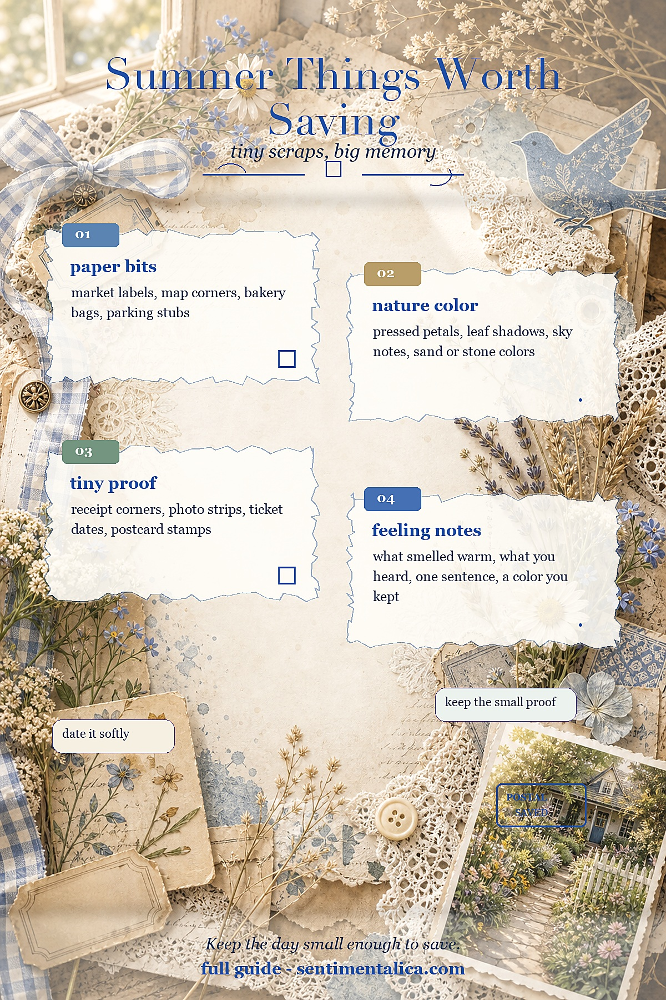
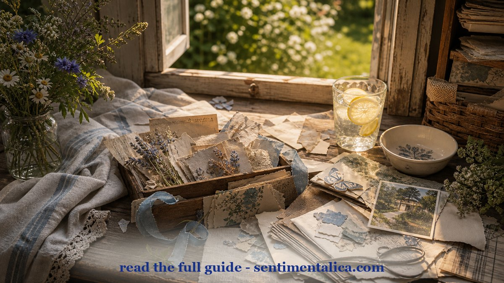
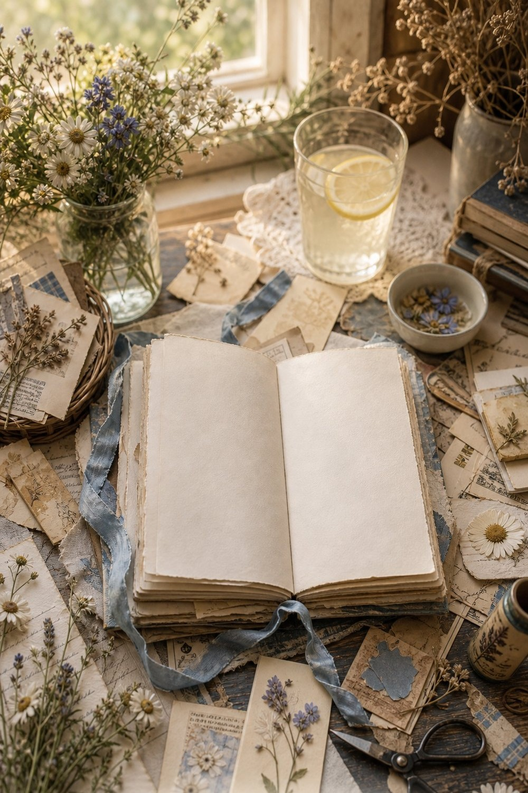

A summer day gives you more journal material than it looks like. The trick is not to keep everything. Keep the tiny proof: the color, the receipt corner, the label, the one sentence that brings the day back.

Start with the paper bits. A bakery bag, a parking stub, a small map corner, or the label from fruit at the market can hold more memory than a perfect decorative sheet. Trim it small so it feels like a detail, not a burden.

Then add one color from the day. It might be the green of a park bench, the blue shadow under a cafe table, or the yellow from late light on a wall. When you repeat that color in thread, washi, or a torn paper strip, the page starts to feel intentional.

For a summer travel or camping spread, printed pages with maps, trails, and warm outdoor colors can give the page structure while your real scraps carry the memory. Keep the product at the end of the process: first the day, then the page.
For more gentle junk journal ideas and color inspiration, keep reading the Sentimentalica journal.